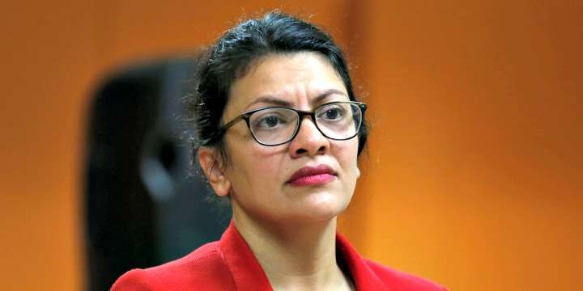

OPINION

Rashida Tlaib était en larmes en parlant des conditions de vie de sa grand-mère en Cisjordanie, et furieuse que sa mère, citoyenne américaine, avait été forcée de passer jadis par un « point de contrôle », pour lui rendre visite:
« Quand j’étais jeune fille, et que j’étais de passage en Palestine pour rendre visite à mes grands-parents, j'ai vu ma mère passer par des points de contrôle déshumanisants - même si elle était citoyenne des États-Unis et fière d'être américaine. »
À la lumière de cette affirmation: - est-il insensé de signaler que les guerres internationales arabes de 1948, 1956, 1967, 1973, 1982, les guerres terroristes (appelées intifadas) de 1989 et 2001 et les États arabes ou des dirigeants palestiniens, contre l'État d'Israël avaient pour but de le détruire? - Il est peut-être impoli de signaler que, lors de la guerre d’annihilation de 1949, qu’il avait déclenchée contre Israël, le roi de Jordanie avait rogné le territoire qui était destiné à un État arabo-palestinien. - Il est probablement peu charitable de mentionner que cette annexion n’avait été reconnue que par la Grande-Bretagne et le Pakistan, et que personne n’avait été invité à faire quoi que ce soit à ce sujet. - Est-ce faire preuve de dureté de coeur que de mentionner que la grand-mère de Mme Tlaib a donc vécu sous occupation illégale par la Jordanie de 1949 à 1967? Et que c’était probablement pas faire preuve d’insensibilité que de préciser qu’Israël n’est entré dans le problème palestinien que lorsque le roi de Jordanie - dans un moment de stupidité stupéfiant – a pris part à la guerre des Six jours de 1967, quand elle était dans son quatrième jour, et qu’il a réussi à perdre toutes les possessions territoriales qu’il détenait illégalement.
- Et étant donné ce que Mme Tlaib considère comme la souffrance de sa grand-mère, il semble que ce soit faire preuve de dureté de coeur que de faire remarquer qu'il n'y avait pas de postes de contrôle durant l'occupation jordanienne, car aucun Israélien - aucun Juif - n'est jamais passé d'Israël à Jérusalem, qui était sous autorité jordanienne entre 1949 et 1967. Aucun Juif ne pouvait prier dans les sites les plus saints, et 58 synagogues situées dans la partie est de la ville ont été dynamitées et détruites. Et aucun Jordanien ou Palestinien n’était autorisé par la Jordanie à passer de Jordanie en Israël pendant cette période pour y travailler, recevoir des soins médicaux ou étudier. Il est pénible de souligner qu’après qu’Israël ait acquis le territoire de la Cisjordanie tout en se défendant contre la faiblesse d’esprit du roi, les travailleurs palestiniens ont été - et le sont toujours - autorisés à se rendre en Israël et à y travailler. Quelque 100 000 à 110 000 Palestiniens travaillent actuellement en Israël et 30 000 autres en Cisjordanie. Est-ce faire preuve de cynisme que de faire remarquer que les points de contrôle sont le résultat d'un terrorisme palestinien qui a mis fin à tout espoir de passage libre ou occasionnel? Non. Il semble donc opportun de faire remarquer que, alors que pas u Jordanien n’a été tué par un terroriste palestinien pour libérer la "Palestine" du gouvernement jordanien au cours des 19 années d'occupation [jordanienne], 2 143 Israéliens ont été tués et près de 10 000 blessés par des Palestiniens lors d'attaques délibérées. Il semble juste aussi d'insister sur le mot «délibérées». L’objectif était de tuer des Juifs. Il est juste de rappeler à Mme Tlaib que 19 des morts et 172 des blessés ont été victimes d'un massacre lors d'une célébration de la fête de Pâques; Nava Applebaum et son père David ont été assassinés dans un café la nuit précédant le mariage de Nava; Kobi Mandell et Yosef Ishran, deux garçons de 13 ans, ont eu le crâne fracassé contre des rochers. Hadas, trois ans, Elad, quatre ans, Yoav, onze ans, et les parents, Ruth et Udi Fogel, ont été assassinés dans leur lit. Dix-huit personnes, dont les Américains Malki Roth et Shoshana Yehudit Greenbaum, ont été tuées dans une pizzeria Sbarro et leurs assassins ont reçu un «salaire» de 910 823 dollars de l'Autorité palestinienne. Il y a encore 2 132 autres personnes sur la liste des victimes, dont il faut prononcer les noms et faire mémoire. Les Israéliens vivent non seulement avec des postes de contrôle, mais également avec des mesures de sécurité intrusives dans les aéroports, les écoles, les centres commerciaux, les salles de concert et d’autres lieux, car tous ont fait l’objet d’attaques, non de nationaux costaricains, ou laotiens, ou népalais, mais palestiniens, dont le but était de les tuer.
Et pourtant, Israël est là, fort, dynamique, en développement, démocratique et tolérant envers tous, à l'exception de ceux qui visent ouvertement leur extermination. Si cela contrarie encore Mme Tlaib, tant pis.
Directrice principale du Jewish Policy Center.
Texte traduit en français et mis en ligne sur Academia.edu, par M.R. Macina le 23.08.19